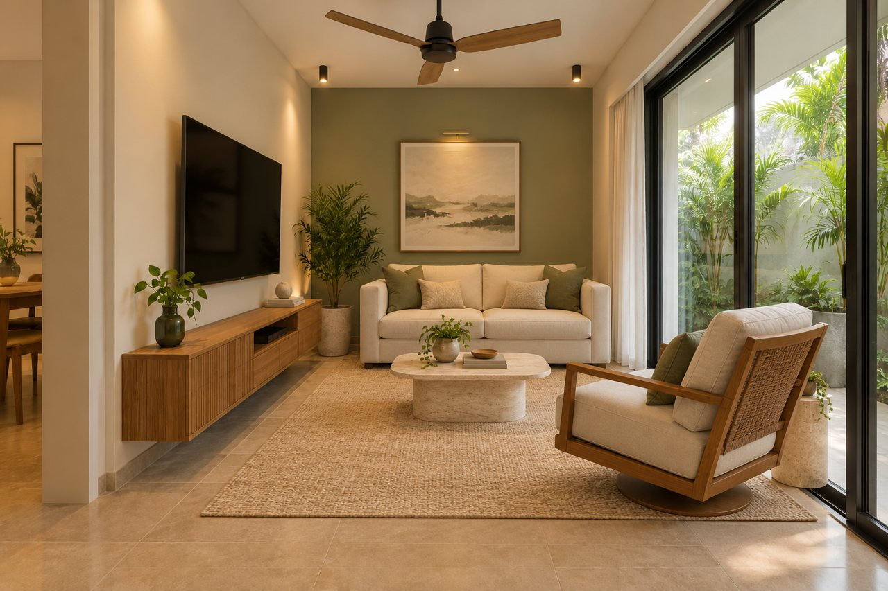

OUR HOME / THREE DESIGN DIRECTIONS
Familiar spaces.
A little more soul.
Earthy colour. Collected textures. The warmth of things made by hand. Five familiar spaces, reimagined in Bohemian, Neo-Ethnic and Tropical Modern styles. Explore all three directions, room by room.
Step inside01—05 Living · Dining · Kitchen · Bedroom · Upper lounge

THE THREAD THAT CONNECTS IT ALL
Warm, layered.
Beautifully lived in.
Bohemian brings layered textiles, cane and earthy colour. Neo-Ethnic pairs Indian heritage with contemporary lines: teak, brass, botanical art and restrained traditional motifs. Tropical Modern adds simple teak, linen and stone with a different furniture arrangement. All three build on your supplied room photographs.
- Terracotta
- Olive
- Ochre
- Linen
- Wood
FIVE SPACES / ONE COHERENT STORY
The room collection
CHOOSE A DIRECTION FOR ALL FIVE ROOMS
Or compare styles individually within each room below.
FROM CONCEPT TO HOME
Start with the layers.
Let the home grow around them.
Begin with rugs, cushions, curtains and ceramics. Then sample wall colours and cabinetry finishes in the room’s daylight before committing.
AI-generated design concepts based on your supplied room images. Geometry and details may vary; these are visual proposals, not measured drawings. Confirm dimensions, materials and installation details on site.